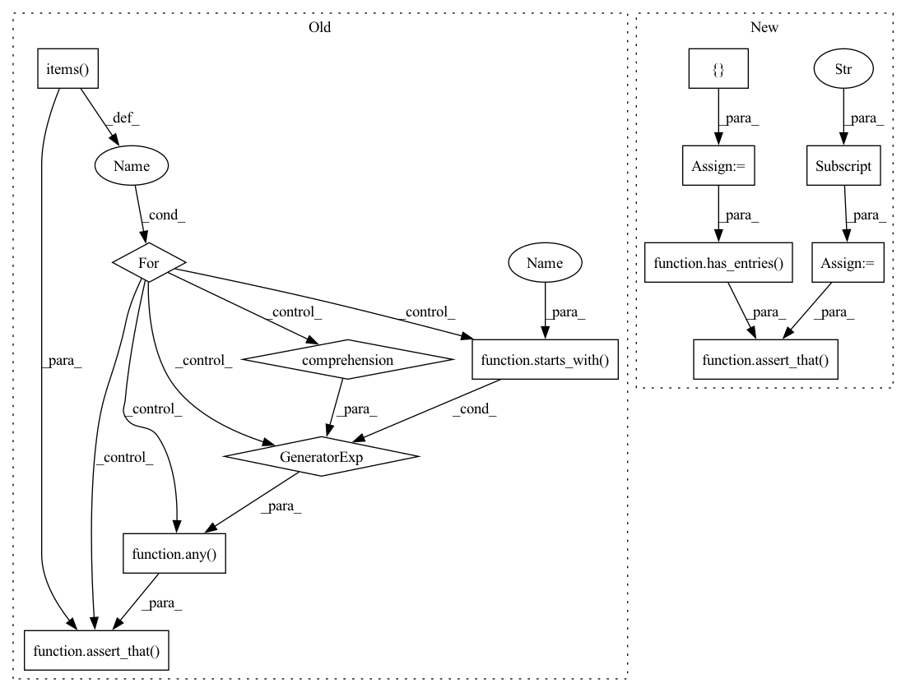

Pattern ID :40755

Before Change
train, _, model = iris_split_dataset_and_model
check_obj = TrainTestDifferenceOverfit()
result = check_obj.run(train, train, model)
for key, value in result.value.items():
assert_that(key, any(starts_with(metric_name) for metric_name in DEFAULT_MULTICLASS_METRICS))
assert_that(value, close_to(0, 0.001))
def test_with_diff(iris_split_dataset_and_model):
After Change
// Assert
train = result.value["train"]
test = result.value["test"]
expected = {"Accuracy": close_to(0.96, 0.01), "Precision - Macro Average": close_to(0.96, 0.01),
"Recall - Macro Average": close_to(0.96, 0.01)}
assert_that(train, has_entries(expected))
assert_that(test, has_entries(expected))
def test_with_diff(iris_split_dataset_and_model):
// Arrange
In pattern: SUPERPATTERN
Frequency: 3
Non-data size: 13
Instances
Fragment ID: 115097668
Project Name: deepchecks/deepchecks
Commit Name: 89ae69f9627cca7402219e97c6d43e88f9887d3e
Time: 2021-11-21
Author: 71635444+yromanyshyn@users.noreply.github.com
File Name: tests/checks/overfit/performance_overfit_test.py
M Class Name: AnonimousClass
N Class Name: AnonimousClass
M Method Name: test_no_diff(1)
N Method Name: test_no_diff(1)
M Parent Class:
N Parent Class:
M File Name: tests/checks/overfit/performance_overfit_test.py
N File Name: tests/checks/overfit/performance_overfit_test.py
M Start Line: 62
M End Line: 67
N Start Line: 72
N End Line: 80
'>
Before Change
alternative_metrics={"Accuracy": "accuracy", "Always 0.5": lambda x, y, z: 0.5}
)
result = check_obj.run(train, val, model)
for key, value in result.value.items():
assert_that(key, any(starts_with(metric_name) for metric_name in DEFAULT_MULTICLASS_METRICS))
assert isinstance(value, Number)
After Change
// Assert
train = result.value["train"]
test = result.value["test"]
expected_train = {"Accuracy": close_to(0.96, 0.01), "Always 0.5": 0.5}
expected_test = {"Accuracy": close_to(0.92, 0.01), "Always 0.5": 0.5}
assert_that(train, has_entries(expected_train))
assert_that(test, has_entries(expected_test))
def test_train_test_difference_condition_that_should_pass():
'>
Fragment ID: 115097669
Project Name: deepchecks/deepchecks
Commit Name: 89ae69f9627cca7402219e97c6d43e88f9887d3e
Time: 2021-11-21
Author: 71635444+yromanyshyn@users.noreply.github.com
File Name: tests/checks/overfit/performance_overfit_test.py
M Class Name: AnonimousClass
N Class Name: AnonimousClass
M Method Name: test_custom_metrics(1)
N Method Name: test_custom_metrics(1)
M Parent Class:
N Parent Class:
M File Name: tests/checks/overfit/performance_overfit_test.py
N File Name: tests/checks/overfit/performance_overfit_test.py
M Start Line: 84
M End Line: 87
N Start Line: 110
N End Line: 118
'>
Before Change
train, val, model = iris_split_dataset_and_model
check_obj = TrainTestDifferenceOverfit()
result = check_obj.run(train, val, model)
for key, value in result.value.items():
assert_that(key, any(starts_with(metric_name) for metric_name in DEFAULT_MULTICLASS_METRICS))
assert_that(value, close_to(-0.035, 0.01))
def test_custom_metrics(iris_split_dataset_and_model):
After Change
// Assert
train = result.value["train"]
test = result.value["test"]
expected_train = {"Accuracy": close_to(0.96, 0.01), "Precision - Macro Average": close_to(0.96, 0.01),
"Recall - Macro Average": close_to(0.96, 0.01)}
expected_test = {"Accuracy": close_to(0.92, 0.01), "Precision - Macro Average": close_to(0.92, 0.01),
"Recall - Macro Average": close_to(0.92, 0.01)}
assert_that(train, has_entries(expected_train))
assert_that(test, has_entries(expected_test))
def test_custom_metrics(iris_split_dataset_and_model):
// Arrange
'>
Fragment ID: 115097670
Project Name: deepchecks/deepchecks
Commit Name: 89ae69f9627cca7402219e97c6d43e88f9887d3e
Time: 2021-11-21
Author: 71635444+yromanyshyn@users.noreply.github.com
File Name: tests/checks/overfit/performance_overfit_test.py
M Class Name: AnonimousClass
N Class Name: AnonimousClass
M Method Name: test_with_diff(1)
N Method Name: test_with_diff(1)
M Parent Class:
N Parent Class:
M File Name: tests/checks/overfit/performance_overfit_test.py
N File Name: tests/checks/overfit/performance_overfit_test.py
M Start Line: 72
M End Line: 77
N Start Line: 89
N End Line: 99